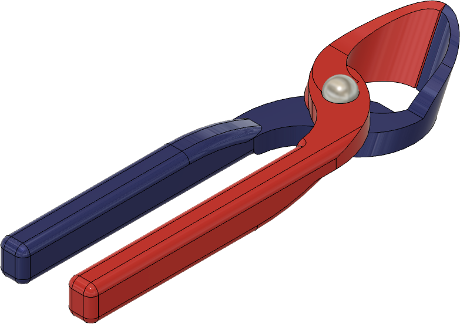
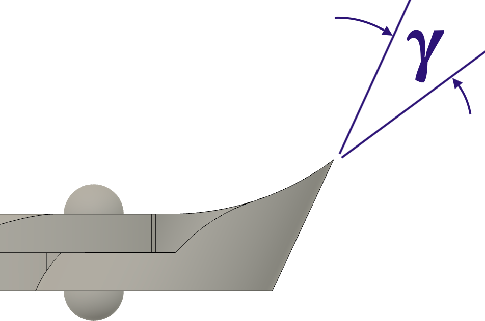
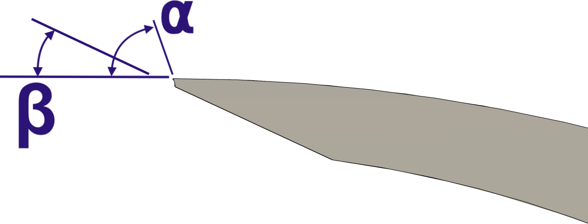
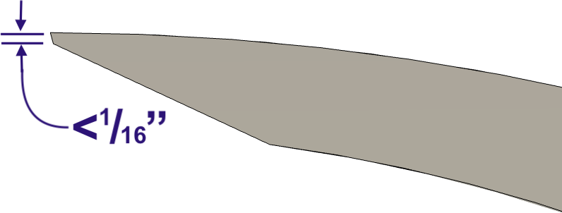
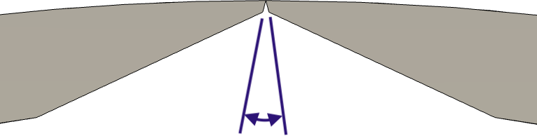

|
|
|
Bonsai Cutters |
|

Bonsai cutter tool |
|

Nose angle |
|

Edge angles |
|

Edge Thickness |
|

Gap on back of cutting edge |
Guidelines shown below are for a number of angles:
α is a primary angle on the nose of the cutters. This is the angle generally sharpened first.
Once this ground surface gets to be too wide (> 1.5mm / 1/16”), the angle represented by β will need to be re-ground.
As noted in the bottom picture on the right, there needs to be a gap between the cutter edges on the inside. They should close tightly on the outer edge (top in this picture).
β is a secondary angle on the nose of the cutters.
γ is an angle which will probably not need to be adjusted unless the tool is damaged. The best way to address this point, is to grind on the curved edge.
The object is not to make the tree look like a bonsai, but to make the bonsai look like a tree.
John Naka
|
General Guidelines |
||||
|---|---|---|---|---|
|
Type |
α | β | γ |
Notes |
| Angled Cutters | 75° | 20° | 30° |
|
| Knob / Root Cutters | 75° | 20° | 90° |
|
The shape of the grind used is a call best made by the tool's use, based on your own experience. Additional notes are available on separate web pages for Grind Profiles, and Micro / Secondary Bevels.
New bonsai cutters should not needed to be reshaped. However, they may need work if a nick is incurred in the blade.
Handheld diamond honing tools (such as those made by DMT) or small machinist’s hand files are often sufficient for reshaping the tool's cutting edge, especially as most bonsai cutting tools are made from high carbon steel. If your tools are stainless steel, a more aggressive hand file may be necessary.
Adjusting closure onto pin
If the cutter will not close completely, the tool will need to be adjusted. One of the handles has a pin which prevents the tool from being closed too harshly. The handle opposite that pin can be filed down to allow the jaws to close more tightly.
This is shown in the picture to the left. The blue handle has a pin (shown in dark blue) which stops the closure of the cutter. A notch can be filed into the pink handle so that it can close tighter over the blue handle.
To file down the handle, use a round or half-round file, and proceed slowly. Remove only a small amount of metal at a time.
Finer grit, handheld diamond honing tools (such as those made by DMT) or small machinist’s hand files are sufficient.
Note: I don't agree with using hydrogen peroxide to disinfect the tools as advocated by the author of this video. Hydrogen Peroxide (H2O2) is also an oxidizing agent which will cause your tools to rust.